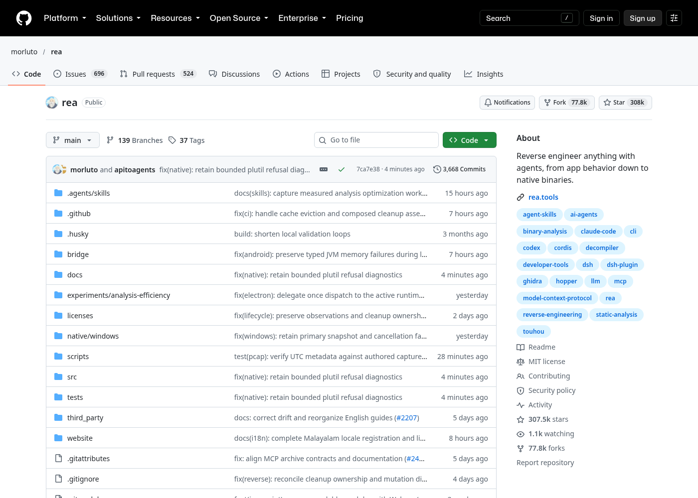
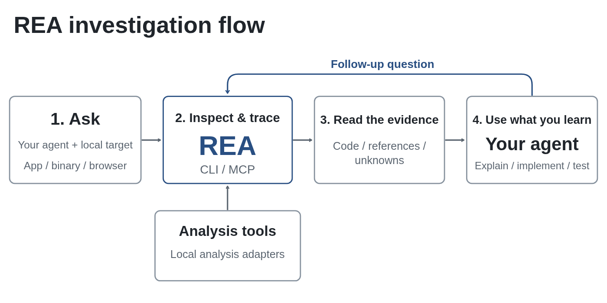
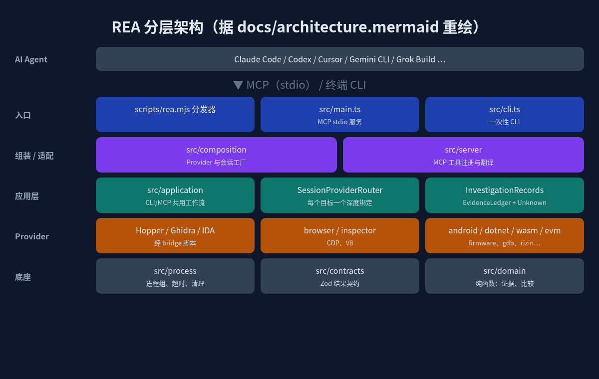
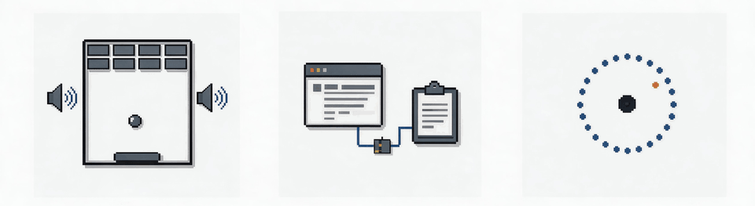

半年 30 万 Star！ReA 让 AI Agent 学会逆向：从 App 行为一路挖到二进制
数据截至 2026-10-18（北京时间）：GitHub 上 morluto/rea 约 30.75 万 Star、7.78 万 Fork，仓库 2026 年 4 月 14 日才创建，最新版本 rea-agents v6.5.0（2026-10-13）。

一、ReA 是什么？
一句话：ReA（官方写作 REA，Reverse Engineer Anything）是一个给 AI Agent 用的逆向工程 MCP 服务器，顺带也能当命令行工具用。
README 的定位很直白：“One MCP for reverse engineering across binaries, applications, and runtime behavior.” 你在别人的 App 里看到一个好用的功能，想知道它怎么实现的，就让 Claude Code、Codex、Cursor 这类 Agent 调用 REA 去“拆”这个 App：不需要源码，它会给出伪代码、汇编、模块关系等证据，Agent 再据此解释原理，甚至帮你在自己项目里实现一个类似的。
项目基础信息：
| 项 | 内容 |
|---|---|
| 仓库 | github.com/morluto/rea |
| 语言 | TypeScript（桥接部分有 Java / Python / Swift） |
| 协议 | MIT（第三方组件各自保留许可） |
| npm 包 | rea-agents，命令 rea |
| Node 要求 | 22.x（≥22.19）、24.x（≥24.11）或 26+ |
二、为什么这么火？
我觉得有三点：
- 踩中了 “Agent + MCP” 的风口。过去逆向是 IDA / Ghidra 老师傅的手艺活，现在 Agent 会写代码了，缺的是“眼睛”。REA 把一堆专业逆向工具包装成 Agent 能调用的工具，等于给 Agent 装上了逆向能力。
- 覆盖面离谱地广。不只是原生二进制，JS/Electron 应用、.NET 程序集、Android APK、网站、固件、WASM、EVM 字节码、SQLite、抓包文件、Linux 崩溃转储……README 里的支持表有二十多行。
- 迭代极快、工程量扎实。光 10 月 9 日到 14 日就发了 v6.1 到 v6.5 五个版本；仓库截图里能看到 3600+ 次提交、139 个分支；
.github/workflows下有几十条real-*开头的真实工具验证流水线（真 Ghidra、真 Hopper、真浏览器等）。截至今天 issue 区仍在不停有人提 Bug，社区相当活跃。
三、它解决什么问题？
传统做法：开 Ghidra → 找函数 → 看伪代码 → 手动重命名 → 自己总结。大模型能帮忙，但你得把一大坨反编译结果复制给它，它还容易“编故事”。
REA 的思路是让 Agent 自己去调工具、自己追调用链，而且每个结论都附带证据和“未知项”。README 原话：results include the evidence and limitations behind each conclusion。架构里专门有 EvidenceLedger（证据账本）和 Unknown 的概念——这对抑制模型幻觉很关键：说不清的地方明确标为未知，而不是瞎猜。
另外，分析在本地跑。FAQ 里说得很清楚：REA 本地分析目标，Agent 只拿到工具结果；但你用的模型服务商怎么处理这些结果，要看它自己的数据政策。
四、工作流程

上图来自官方 README，流程是：
- 你向 Agent 提问（比如“Notes 里的搜索是怎么做的”）；
- Agent 通过 MCP 调用 REA，检查目标、追踪相关代码；
- REA 返回代码、引用关系和未知项；
- Agent 基于证据继续追问、解释，或者写代码并测试。
CLI 命令走的是同一套工作流，所以脚本化也很方便。
五、架构拆解
我按仓库里的 docs/architecture.mermaid 重画了一张简化图：

从上到下几层：
- 入口层：
scripts/rea.mjs是可执行分发器，把请求路由到src/main.ts（MCP stdio 服务）或src/cli.ts（一次性 CLI）。package.json里rea和rea-agents两个命令都指向它。 - 组装 / 适配层：
src/composition负责创建各类 Provider 与会话工厂；src/server负责 MCP 工具注册和请求翻译。 - 应用层：
src/application是 CLI 与 MCP 共用的工作流。其中SessionProviderRouter + BinarySession实现“每个目标一个不可变的深度分析绑定”；AnalysisProviderRegistry的注释写着“deterministic selection, no fallback”——选哪个反编译后端是确定的，不会悄悄换一个，这样结果可复现。 - Provider 层：Hopper、Ghidra、IDA 是原生分析的“深度后端”；另外还有浏览器（CDP/Playwright）、V8 Inspector、.NET、Android（JADX）、固件（Binwalk/Unblob）、GDB、Rizin、objdump、WASM、EVM 等一大堆。IDA 部分是对外部
ida-pro-mcp的契约适配。 - 底座：
src/process管进程组、超时和清理；src/contracts定义调用方可见的结果 schema；src/domain是无副作用的纯函数模块（证据、比较、应用图）。
六、关键代码走读
1. 桥接脚本：在逆向工具“内部”干活
bridge/ 目录是 REA 和各大工具的连接点：
bridge/hopper_bridge.py：跑在 Hopper 内部，把操作适配到 Hopper 的 Python API；外层src/hopper/通过 Unix socket 协议和它通信。bridge/ghidra/ReaGhidraBridge.java：打包成 Ghidra HeadlessScript，提供函数清单、反编译、引用、CFG。同目录还有 MIPS、DOS 等专项处理脚本。bridge/android/ReaJadxBridge.java、bridge/cutter/rea_bridge.py、bridge/pwndbg/、bridge/mitmproxy/capture.py等分别对接 JADX、Cutter、pwndbg、mitmproxy。
这种“插件跑在宿主工具里 + 外部 TypeScript 进程管理生命周期”的设计，好处是能直接用这些工具成熟的分析能力，而不是自己造一个反编译器。
2. 会话与证据
src/application/investigation/ 负责组合 InvestigationRecords，把证据账本和未知项的归属管起来；AnalysisSnapshotCache 做二进制目标的快照缓存。v6.5.0 的更新日志也提到可以“分页读取已保存的证据，无需重跑分析”，以及“分析或清理失败时，已完成的证据和部分观测依然保留”。
3. Agent Skill
仓库 .agents/skills/reverse-engineer-anything/ 下是给 Agent 的调查指引，按 Android、JS 应用、原生产物、运行时观测等拆成多份参考文档。setup 时会把 MCP 注册和这套指引一起装进你的 Agent。
七、快速上手
以下命令都来自官方 README。
1）给 Agent 安装（推荐）
npx rea-agents setup
选择你的 Agent，确认改动（会备份原配置），然后重启 Agent。支持 Claude Code、Codex、Cursor、Gemini CLI、Grok Build 等。
2）直接对 Agent 说
Understand how search works in the Notes app, show me the evidence, and build a
similar feature for my project.
把 Notes 换成你的目标 App 和功能即可。
3）终端分析 JS/Electron 应用
npx -y rea-agents@latest analyze-javascript-application /absolute/path/to/app --json
输出包括模块、导入关系、Electron 边界及其证据。
4）全局安装与更新
npm install --global rea-agents
rea --help
rea update
注意几点：
- 原生二进制深度分析需要 Hopper、Ghidra 或 IDA 之一；静态 JS 和 .NET 分析不需要。
- Linux 上跑 Ghidra、JADX、固件工具和静态 JS/Electron 分析，需要 PATH 里有 procps 兼容的
ps。 - 大型二进制可通过
REA_GHIDRA_STARTUP_TIMEOUT_MS/REA_HOPPER_STARTUP_TIMEOUT_MS调大启动超时。

八、官方案例

- DX-Ball：追一个声音调用到“位置→声像”辅助函数，把不完整的伪代码还原成 C。README 写道：重建版本通过了 3,205 个原始 x86 用例，并复现了全部 63 个编译后的函数字节。
- Notion：从渲染进程的剪贴板 API，经 preload 和 IPC 一路追到主进程，查看富文本剪贴板格式。
- TH04（东方幻想乡，PC-98）：分析 16 位指令，还原固定/瞄准弹幕环的角度计算，并和历史编译器输出对比。
九、和同类项目比
| 维度 | REA | 单工具 MCP（如 ida-pro-mcp） | 直接用 Ghidra / IDA |
|---|---|---|---|
| 覆盖范围 | 原生、JS/Electron、.NET、Android、网站、固件等 | 主要围绕单个工具 | 原生二进制为主 |
| 后端 | 可选 Hopper / Ghidra / IDA 等 | 绑定一个 | 自身 |
| 面向 Agent | 是，带 Skill 与证据/未知项契约 | 是 | 否，需人工操作 |
需要说明：REA 的 IDA 支持本身就是适配上游 ida-pro-mcp，二者是组合关系而非替代。表里只列了结构性差异，没有性能对比——我没找到可信的横向基准数据。
十、局限与注意
- 依赖外部工具：深度原生分析离不开 Hopper/Ghidra/IDA；商业工具（IDA Pro、Hopper、JEB）必须合法授权，README 明确反对破解版和共享密钥。
- 平台差异大：很多能力标注了“仅 Linux x64 验证”或需要特定版本工具，Windows 下 Ghidra 支持还是实验性的。
- 变化快：官方自己都说“REA changes quickly”，遇到问题先
rea update。这也意味着文档和行为可能随版本变化。 - 合规红线：DISCLAIMER 明确不支持绕过 DRM / 授权校验 / 反作弊、开发外挂、复制专有代码等用途。逆向在不同司法辖区和软件许可下可能受限，务必只分析自己拥有或获授权的软件。
- 模型数据：分析虽在本地，但结果会发给你的模型服务商。
十一、适合谁用？
- 安全研究、恶意样本分析、CTF 选手；
- 想搞懂某个 Electron / Web 应用功能实现的前端、全栈开发者；
- 做互操作、老软件/老游戏保存与重建的人；
- 想让 Agent 帮忙排查自家二进制、崩溃转储的工程师。
十二、总结
REA 的本质，是把散落在 IDA、Ghidra、Hopper、JADX、浏览器调试协议里的逆向能力，用 MCP 统一成 Agent 可调用、结果可追溯的工具集。它最值得借鉴的不只是“能逆向”，而是“每个结论都有证据、不确定就写未知”的设计。半年 30 万 Star，说明“Agent 看懂没有源码的软件”这件事，大家是真的需要。
顺带一提，这篇文章的资料检索和整理，我也是用 Grok Bot 月卡这类 AI 工具辅助完成的（https://momoai.czvip.cn），效率确实高不少。
参考：GitHub morluto/rea 的 README、CHANGELOG、DISCLAIMER、docs/architecture.mermaid；官网 rea.tools。